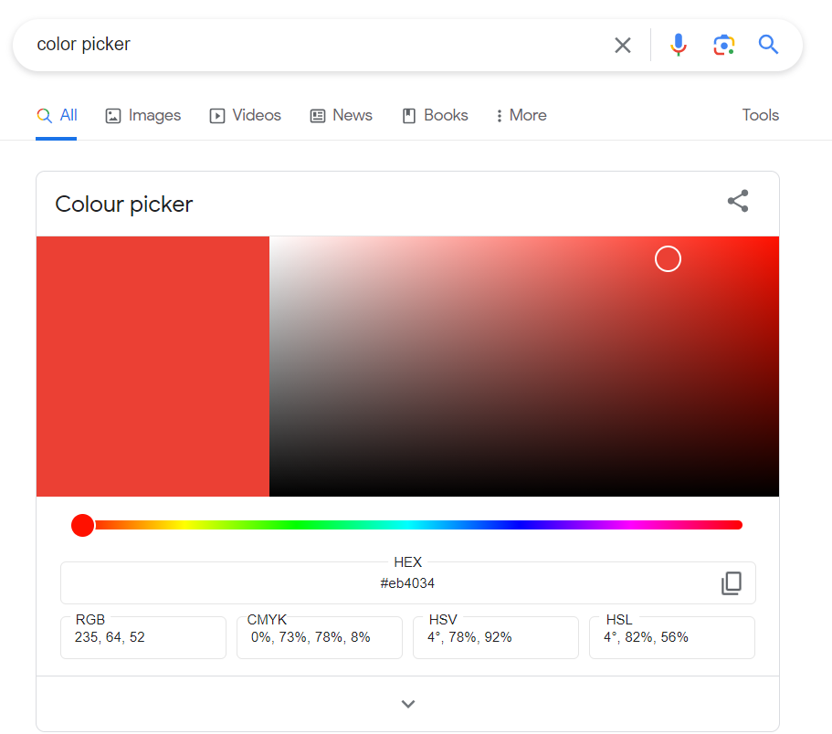

I recommend reading this post in dark mode if the example images are too intense for your eyes in light mode. To switch modes, click the toggle button in the top right corner, located to the left of the search icon.
Definitions
Color Palette: A predefined set of colors used to represent different data categories or values in charts, graphs, or other visualizations.
Hex color: A color expressed as a six-digit combination of numbers and letters defined by its mix of red, green and blue (RGB).
The remainder of this post will go through the resources I use for color palette generation and previewing how charts and dashboards will look with it.
Google Color Picker
When selecting colors for data visualization, websites, or dashboard themes, I often rely on the Google Color Picker tool. It’s an excellent resource that allows you to choose colors tailored to your specific use-case. Since the colors are a mix of RGB (Red, Green, Blue), there are a staggering 16,777,216 possible combinations available. This is because each RGB parameter can have a value between 0 and 255, resulting in a total of 256 x 256 x 256 possible colors.
To access the Google Color Picker, simply open Chrome and search for “color picker”.

Data Color Picker
Data color picker is a versatile tool designed to assist in generating color palettes, single hue scales, and divergent color scales. Additionally, it provides visual previews of these color schemes in context, along with guidance on their application for data visualization.
The images below show the different color generation options and how they look in context.
Coolors
Coolors is a color palette generator and platform where you can explore popular and trending color schemes. It provides inspiration for creating your own palettes through a range of customization options. With Coolors, you can easily discover, experiment, and craft unique color combinations to suit your design needs.
Dashboard Color Checker
The dashboard color checker serves as a great tool for previewing how a dashboard will look with different color palettes. It provides the option to copy the URL of the color palettes generated in Coolors.
This dashboard color checker was developed by Cameron Seamons.
Cameron LinkedIn post on the dashboard color checker
Joshua Tapley provides a tutorial on how to create the Dashboard Color Tester app.
Muted Colors
I often choose muted colors for many of my data visualisation tasks. Muted colors, also known as desaturated or subdued colors, are softened by adding gray or complementary hues to reduce their brightness intensity.
These are the reasons why I choose muted colors:
Reducing Noise: Muted colors minimize distractions, focusing attention on the data.
Enhancing Readability: Muted colors ease strain and improve comprehension.
Conveying Professionalism: Muted colors offer a mature, serious look suitable for formal contexts.
A simple Google search for “muted color hex codes” can help you find websites that provide them.
Link to All Resources
Your friendly neighborhood data scientist